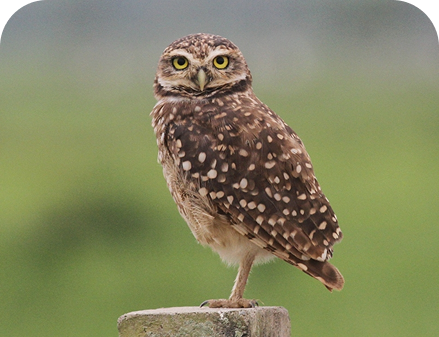
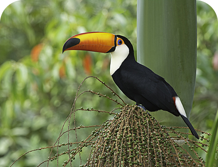
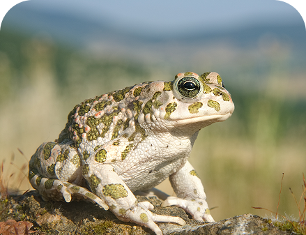

Tityus serrulatus
O escorpião-amarelo é encontrado em locais escuros e úmidos, como entulhos, esgotos, ralos e terrenos baldios.

Athene cunicularia
A coruja-buraqueira vive em áreas abertas e costuma fazer seus ninhos em tocas no solo. É uma ótima caçadora de pequenos animais.

Ramphastos toco
O tucano é encontrado principalmente em florestas e áreas arborizadas. Alimenta-se de frutos, insetos e pequenos animais.

Rhinella icterica
O sapo-cururu vive em áreas úmidas e pode ser encontrado próximo a rios, e matas. Alimenta-se principalmente de insetos.